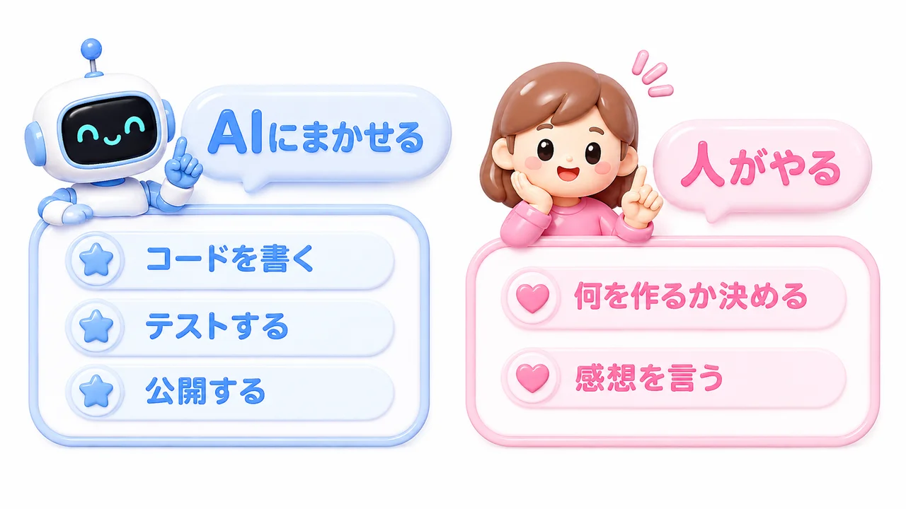

費用ほぼゼロ。非エンジニアがAIでアプリを作るための実践メモ
シリーズ最終回です。第1回では日本語のお願いだけでゲームが公開されるまでを、第2回では会話でアプリを"育てる"様子を紹介しました。
今回は「自分でもやってみたい」という方のために、使った道具・かかった費用・AIへの頼み方のコツをまとめます。
使った道具は3つだけ
| 道具 | 役割 | 費用 |
|---|---|---|
| Claude Code（AIアシスタント） | 開発・テスト・公開作業のすべて | 月額サブスク |
| GitHub（コード置き場＋無料ホスティング） | ゲームの公開。GitHub Pagesという無料機能でWebに公開できる | 無料 |
| ChatGPT（画像生成） | アイコンなどのイラスト作成 | 月額サブスク（既存契約を流用） |
つまり実質のコストはAIのサブスク代だけ。サーバー代もドメイン代も、公開のための追加費用はかかっていません（独自ドメインを使う場合のみ年間千円台〜）。
パソコンに特別なソフトを入れて設定する部分は少しだけありますが、そこもAIに「教えて」と言えば手取り足取り案内してくれます。
AIへの頼み方、3つのコツ
実際にやってみて効果があった伝え方のコツです。
コツ①：たとえで伝える
最初のお願いは「テトリスみたいなブロックを、パズルのように当てはめる」でした。正確な仕様よりも、誰もが知っているものにたとえる方が、イメージ通りのものが出てきます。
コツ②：一度に全部頼まない
最初から「モードもグラフもアイコンも全部入りで」と頼むより、まず動くものを作って、遊んでみて、「次はこれ」と足していく方がうまくいきます。1回のお願いはひとつかふたつ。育てる感覚です。
コツ③：感想をそのまま言う
「背景の色味をパステルカラーで水色とかピンクにしたい」「グラフで出すのはどう？」——こんな話し言葉の感想で十分伝わります。専門用語に翻訳する必要はありません。むしろ素直な感想の方が、良い提案が返ってきます。
AIに任せられること／人がやること
やってみてわかった役割分担です。

AIに任せられること
- プログラムを書く（今回、私は0行）
- 動作テスト（自分でゲームをプレイして確認までする）
- 公開作業（GitHubへの登録・公開設定）
- 画像・アイコンの生成
- バグの発見と修正（タイマーの不具合をAIが自分で見つけて直しました）
人がやること
- 何を作りたいかを決める
- 実際に触ってみて、感想を言う
- 「これでよし」を判断する
つまり、人間の仕事は企画とダメ出し。これなら、プログラミング経験がなくても務まります。
お店や地域でも使えます
「ゲームなんて作っても……」と思うかもしれませんが、同じやり方でこんなものが作れます。
- お店のデジタルスタンプカード（ホーム画面に追加してもらう）
- イベントの受付・抽選アプリ
- 商店街のスポット巡りゲーム
- 教室や講座の練習ドリルアプリ
今回のゲームがそうだったように、スマホのホーム画面にお店のアイコンが並ぶ体験を、ほぼ無料で提供できるのです。
おわりに
「AIでアプリを簡単に作れる時代」は、キャッチコピーではなく、もう日常です。必要なのは技術ではなく、作りたいものと、それを言葉にする気持ちだけ。
このシリーズが「自分もやってみようかな」のきっかけになれば嬉しいです。まちのAI屋さんでは、こうしたAI活用の相談もお受けしています。お気軽にどうぞ。